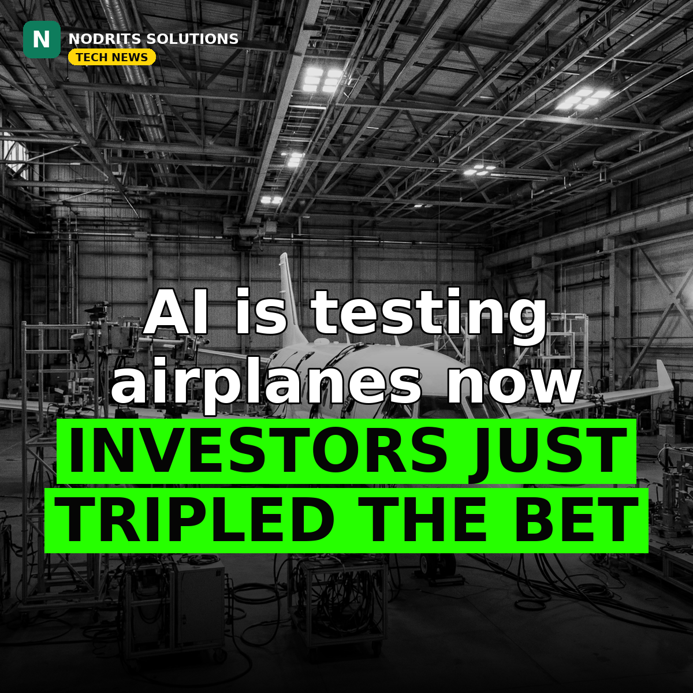

The AI That Tests Airplanes Just Tripled in Value

The AI money is flowing beyond chatbots into the physical world. On November 9, 2026, Austin-based Nominal announced a $240 million Series C at a $3 billion valuation — triple the $1 billion it was priced at in March, when a $155 million Series B extension closed.
What happened
Nominal is a four-year-old startup whose AI platform engineers and tests complex hardware such as aircraft, nuclear reactors and smart factories. The Series C was led by Lightspeed Venture Partners and co-led by Insight Partners. The company says it has 80 commercial and government customers, counts Sequoia, General Catalyst and Lux Capital among its investors, and won a $71.2 million U.S. Air Force STRATFI award in October. CEO and co-founder Cameron McCord is a former U.S. Navy submarine officer and Anduril alum.
Why it matters
A 3x valuation jump in eight months signals how hot AI-for-engineering has become. Investors are now paying a premium for AI that tests airplanes and reactors — systems where a mistake is not a bad answer, it is a disaster. The race is no longer only about chatbots and writing tools; it is about the physical world, where testing and simulation decide whether hardware is safe to ship. Nominal's rise says the next AI winners may not write words at all — they will test things that must not fail.
What it means for you
If you work with clients in manufacturing, aerospace or engineering, expect AI-assisted testing and simulation to enter their workflows soon — and expect them to ask vendors who understand it. Developers and designers who can speak both AI and physical product will have an edge over pure-software generalists. If you are a freelancer, this is a niche worth learning: simulation, testing and hardware-adjacent AI are about to get a lot of budget.
The Nodrits take
When safety-critical hardware meets AI, trust becomes the product. Should machines this powerful be trusted with safety-critical engineering, or should a human always have the final sign-off? Tell us in the comments on today's post.
Need a website, SaaS product or AI workflow built right?
Nodrits Solutions designs, develops and automates for businesses in Pakistan, the USA, UK, UAE and Saudi Arabia.
Talk to Nodrits →Sources: TechCrunch, "AI hardware startup Nominal triples valuation to $3B in 8 months" (November 9, 2026). Valuation, round size, customer count and the Air Force award are as TechCrunch reported them.. Published November 10, 2026.